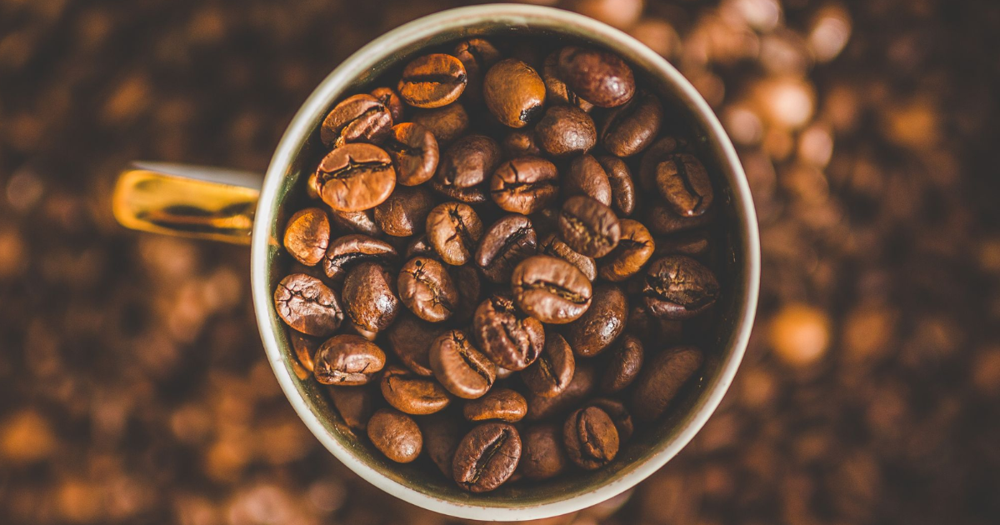

Kaffe er en af verdens mest populære drikkevarer, og dens historie kan spores tilbage til det 9. århundrede, hvor den første dokumenterede anvendelse af kaffe fandt sted i det nuværende Etiopien. Kaffebønnen, som er kernen i kaffe, har gennemgået en lang rejse fra bønne til kop, og denne artikel vil tage dig med på en tur gennem kaffens historie og produktion.
Kaffebønnen er frøet fra frugten af kaffetræet. Træet bærer bær, der er røde eller gule, og hver bær indeholder normalt to kaffebønner. Når bærret modnes, bliver det rødt og sødt, og kaffebønnen inde i bæret modnes sammen med det. Kaffebønnen er dækket af et tyndt lag kaldet sølvhud, der skal fjernes, før bønnen kan bruges til at lave kaffe.
Kaffeplukning er en vigtig proces i kaffeproduktionen. Kaffebærerne plukkes normalt manuelt, og kun de modne bær plukkes. Efter plukning fjernes frugtkødet, og kaffebønnen tørres i solen eller maskintørres, indtil det har den rette fugtighedsprocent.
Efter kaffebønnerne er tørret, skal de ristes for at frigive den karakteristiske kaffesmag. Ristningen foregår normalt ved høje temperaturer i en rister, og ristningstiden og temperaturen påvirker kaffens smag og aroma. Efter ristning skal kaffebønnerne køles hurtigt for at undgå yderligere ristning.
Efter ristning er kaffebønnerne klar til brygning. Kaffe kan brygges på forskellige måder, herunder ved hjælp af en kaffemaskine, en perkolator, en French press eller en espressomaskine. Kaffebrygningsteknikken påvirker kaffens smag og aroma, og det er vigtigt at vælge den rigtige bryggemetode til den ønskede smag.